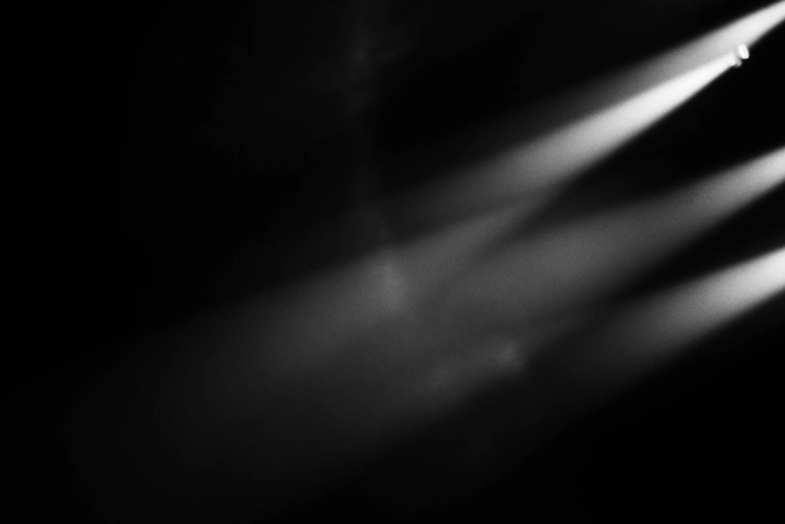
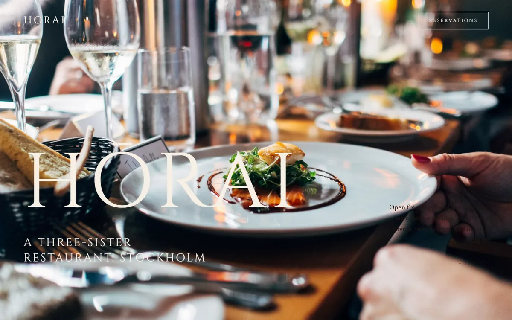

01Behovsanalys
Vi lär känna företaget
Vi går igenom vad företaget gör och vad sajten faktiskt ska lösa. Ingen färdig mall. Resultatet är en tydlig plan för resten av arbetet.

Digital byrå
Vi skapar skräddarsydda digitala lösningar som exponerar ert företag: webbdesign, grafisk form och egna system, samlat hos en partner.
Processen
Vi håller ordning på arbetet så att ni slipper göra det. Från första samtalet till lanserad sajt vet ni alltid var vi är i processen.
Vi går igenom vad företaget gör och vad sajten faktiskt ska lösa. Ingen färdig mall. Resultatet är en tydlig plan för resten av arbetet.
Grafisk form och varumärke sätts innan en enda rad kod skrivs. Färg, typografi och ton väljs utifrån företaget som ska bära dem.

Sajten byggs skräddarsydd för verksamheten, inte hoprafsad i ett färdigt tema. Vi bygger även egna system, bland annat Alunix OS och ett lagersystem, så vi vet hur teknik ska hålla över tid.

Innan lansering går vi igenom varje sida, länk och bild. Så här ser resultatet ut när det är klart.

Vår filosofi är att alla har rätt till bra design. Därför lägger vi oss på en nivå som gör våra tjänster tillgängliga för fler, utan att kompromissa med resultatet. Det gäller efter lansering också.